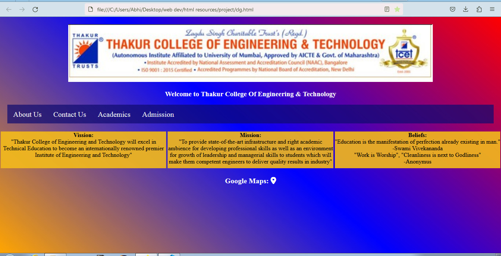
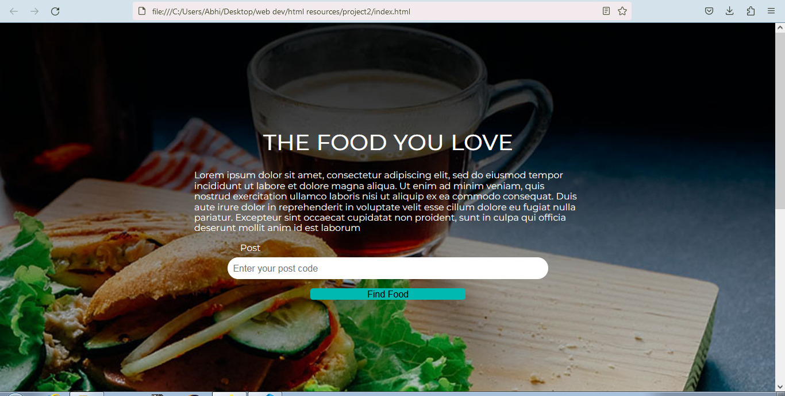

About
Your summary or bio.
Portfolio
Project 1
A college website is a dynamic platform that serves as an online hub for students, faculty, and administrators. Here's a brief description of what you might include in the code for a college website:
Homepage: The homepage welcomes visitors and provides a quick overview of the college's identity, mission, and values. Navigation menus to access various sections of the website.
About Us: A dedicated section providing information about the college's history, leadership, and key achievements. Details on campus facilities, infrastructure, and any unique features.
Admissions: Information on admission procedures, requirements, and deadlines. Downloadable admission forms and prospectus.
Academics: Detailed information about academic programs, courses, and curriculum. Faculty directory with profiles. Academic calendar and important dates.
Contact Us: Contact information for different departments and key personnel. Inquiry forms for prospective students or general queries.
The code for a college website would likely involve a combination of HTML, CSS, JavaScript for front-end development, and a server-side language (such as PHP, Node.js, Python, etc.) along with a database for dynamic content and user authentication. It would also require consideration of web development frameworks and security best practices.
Project 2
A food recipe website is an interactive platform designed to provide users with a variety of recipes, cooking tips, and culinary inspiration. Here's a description of what you might include in the code for a food recipe website:
Homepage: The homepage features a visually appealing layout with high-quality images of delicious dishes. Categories of recipes such as appetizers, main courses, desserts, etc. Featured recipes or a recipe of the day section.
Search and Navigation: A search bar for users to find recipes based on ingredients, cuisine, or dietary preferences. Navigation menus for easy access to different recipe categories.
Pages: Individual pages for each recipe with a detailed list of ingredients and step-by-step cooking instructions. Nutritional information and serving sizes. Cooking time and difficulty level.
The code for a food recipe website would typically involve HTML, CSS, and JavaScript for front-end development, and a server-side language (such as PHP, Node.js, Python, etc.) along with a database for dynamic content, user accounts, and recipe storage. It would also involve considerations of web development frameworks, content management systems, and security best practices.
Contact
Email: nitybhave45684@gmail.com
Phone: 9930556438